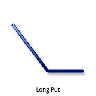
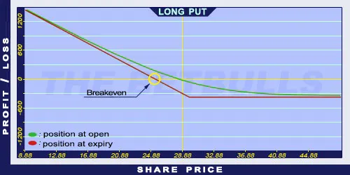

Description and use

Long Put is the purchase of a Put option. This position grants the right to the option holder to sell an underlying security at an agreed-upon price until a specific future date. When opening this position, the option holder expects the price of the underlying to decrease. One should think in long-term, in 3 months at least. If the market is extremely negative, one can expect a huge fall in prices. The more negative the market the farther OTM and cheaper Put option should be purchased.
- Type: Bearish
- Transaction type: Dedit
- Maximum profit: Limited
- Maximum loss: Limited
- Strategy: Basic strategy
Opening the Position
Buy a Put option.
Steps
Entry:
- Make sure the market trend is actually decreasing or stagnating after the option purchase.
Exit:
- To avoid the time decay effect, sell the Long option at least one month before the expiry date.
- If the underlying’s price increases above the Stop Loss level, close the position by selling the Put option.
Basic Characteristics
- Maximum loss: Limited. The lost amount cannot be bigger than the premium paid.
- Maximum profit: Strike price - premium. Increasing as the prices fall (until the price falls to 0).
- Time decay: Time decay has a negative effect on the Long Put. The closer the option to expiration, the more it loses from its value.
- Breakeven point: Strike price - premium.
Advantages and Disadvantages
Advantages:
- Falling market prices generate profit.
- The potential profit is unlimited in theory, and the potential loss is limited.
Disadvantages:
- An incorrectly chosen strike price, expiration, or underlying security can result in a potential loss of 100% of the investment.
Closing the Position
Sell the Put option.
Mitigation of Losses
Determine the value for the Stop Loss based on the underlying security.
Example

Long Put strategy example with ABCD traded at $28.88 on 19.02.2017. The investor buys a Long Put option with a strike price of $30.00, expiring in January 2018, and costing $4.38 (premium).
- Debit: $4.38
- Maximum loss (risk): $4.38
- Maximum profit: $25.62
- Breakeven point: $25.62